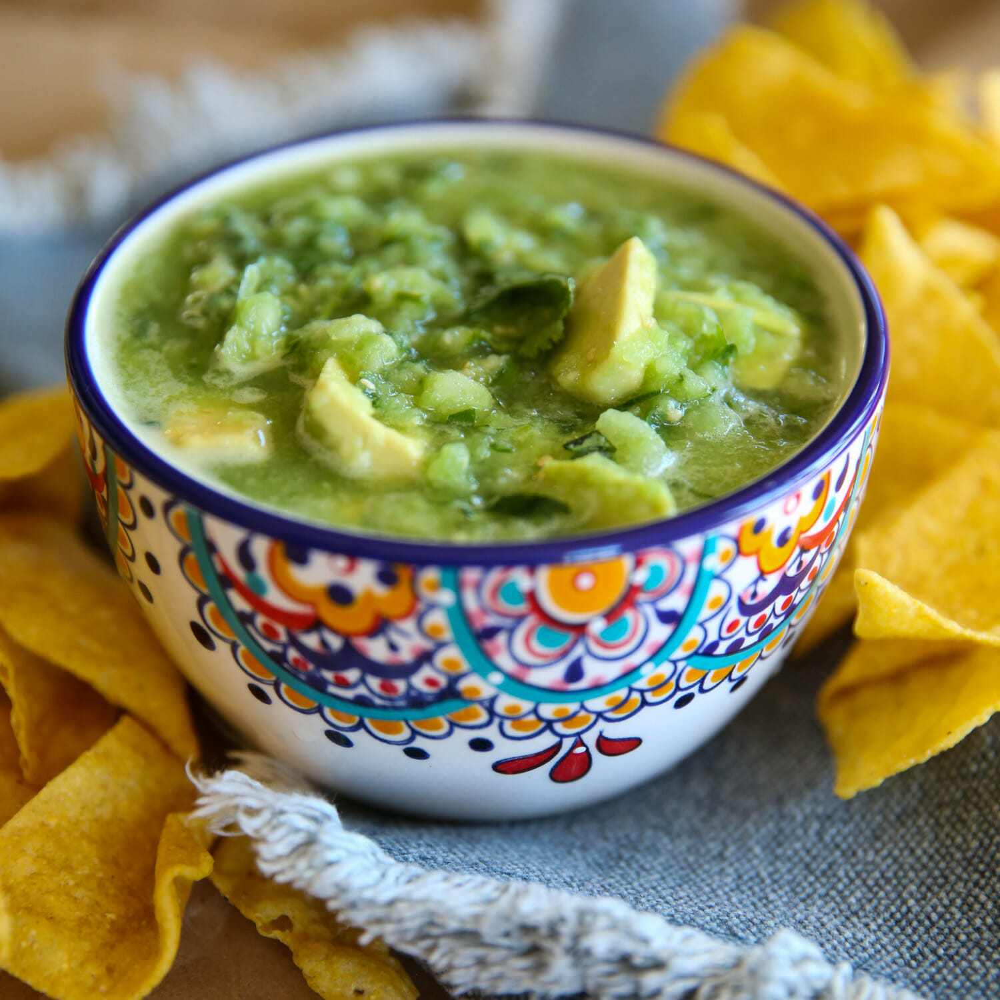

Sheri Wetherell, June 5, 2019, on Foodista Cooking Without Waste
Did you know about 35-50% of all food produced is wasted? That's just sad. But did you know much of what you toss into your kitchen's compost bin can be transformed into something scrumptiously edible (provided it's not already looking like a science experiment)? In an attempt to curb my own family's wastefulness I turned to authors Giovanna Torrico and Amelia Wasiliev for some zero waste culinary inspiration.
In their new book The Zero Waste Cookbook: 100 Recipes for Cooking Without Waste, they cover deliciously clever ways to significantly reduce what you'd normally toss.
According to Torrico and Wasiliev, all it takes is a few simple tips to change our thinking - from how and when we buy our food to menu planning and storage - to get us on the way to a zero-waste kitchen. They give straightforward tips on making the most of the food we have: source locally, buy imperfect produce, menu plan, store food smartly, utilize your freezer, preserve, save leftovers, and check your pantry before you go shopping.
Chapters are broken down by Vegetables, Fruit, Dairy & Eggs, Meat & Seafood, Bread & Pulses (Legumes), and Leftovers. As the authors put it: if you buy good-quality local or organic, there's no need to peel or chop off the ends. Just incorporate it into your dishes. When making tomato sauce keep the normally discarded skins, dehydrate them in the oven, and crush them up to make a tasty concentrated powder. It's great mixed with salt and to add a punch of tomatoey flavor to marinades, dips, or dusted over homemade potato chips (which, by the way, you can make out of the skins).
The stems of various herbs can easily be used to flavor sparkling water or to infuse oils, which are lovely to drizzle over just about anything. The cores of lettuces and cruciferous veggies are delicious when grilled (then drizzle some of that infused oil over it along with with a grating of Parmesan cheese), and stems and ends of or kale, chard, garlic, cucumbers, carrots, and more can easily be transformed into pickles. One of my favorite waste-savers is their Bare Corn-on-the-Cob Stock where a lovely golden stock is made from corn cobs. Imagine using this wonderful stock to use as a soup base or to flavor risottos and stews? Delish! That's just the beginning of their ingenious recipes - all made from "scraps." Are you ready to go from waste to wow? Try their flavorful Mixed Herb Stem Salsa Verde recipe below and you, too, will vow to never toss a stem in the compost again.
"Salsa Verde is great served with meat, fish or roasted vegetables. You can also serve it on crostini or use it as a sandwich spread." - Torrico and Wasiliev
Makes 125 ml (4 fl oz/ 1⁄2 cups)
Prep: 15 mins, Rest: 2 Hrs
Ingredients
Method